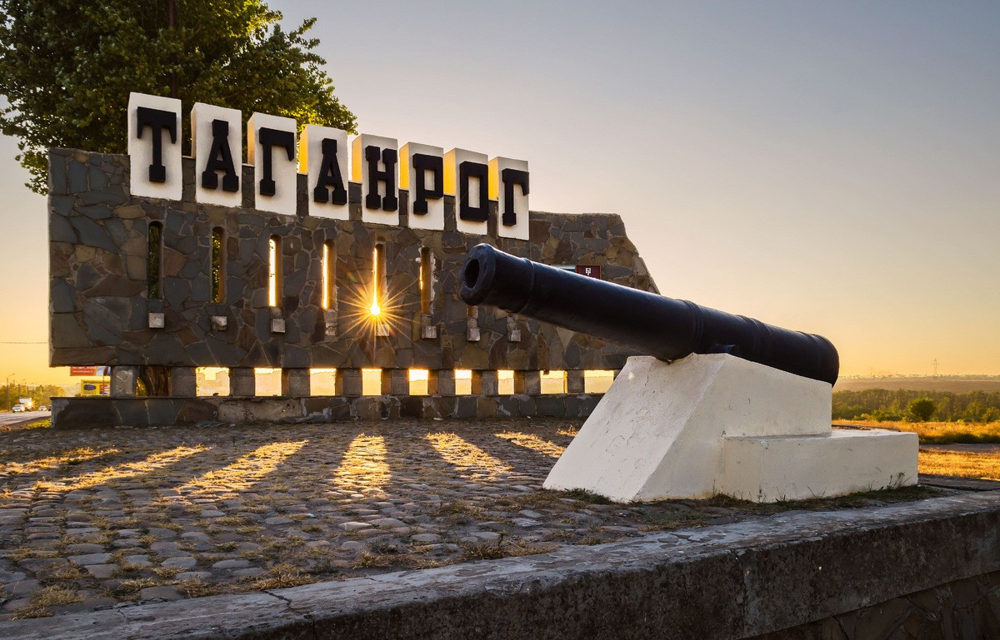
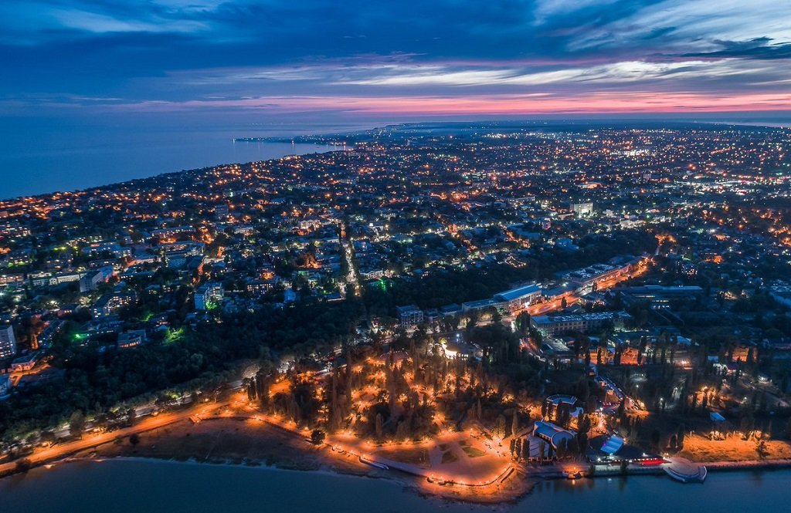

Таганрог
это не просто географическая точка на карте, это душа, полная любви к жизни и искусству

Таганрог
это место, где искусство встречается с природой, а традиции переплетаются с современностью

Таганрог
это не просто город, это симфония архитектуры, культуры и теплоты южного солнца